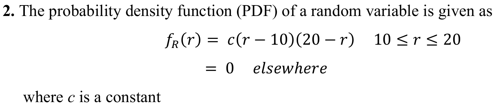
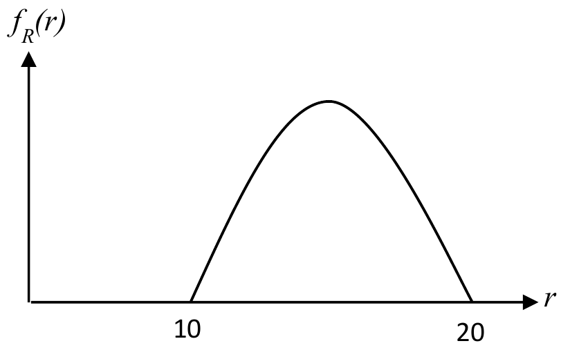
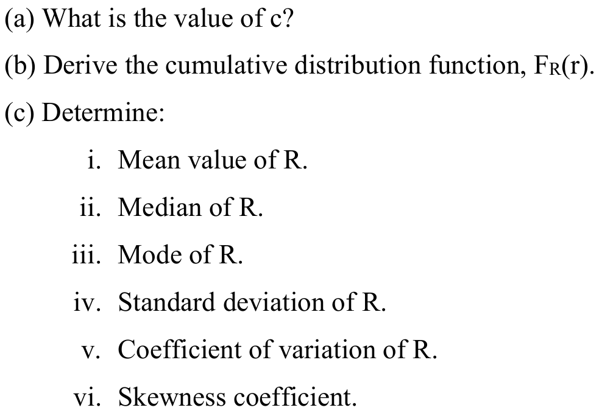

CE2407A
Tutorial 2
Probability models
Week 10
Tutorial 1 · Question 6
![Tutorial Set 1, Question 6. "Liquefaction of sand" denotes a phenomenon in foundation engineering of which a mass of saturated sand suddenly loses its bearing capacity because of rapid changes in loading conditions, for example, resulting from earthquake vibrations. When this happens, disastrous effects on the structures may follow. For simplicity, let us rate the earthquake intensities into low (L), medium (M), and high (H). The likelihoods of liquefaction associated with the earthquakes of these intensities are 0.05, 0.20, and 0.90, respectively. Assume that the relative frequencies of occurrence of earthquakes L, M, and H are 1, 0.1, and 0.01 per year, respectively. (a) What is the probability that the next earthquake is of low intensity (L)? (b) What is the probability of liquefaction of sand at the site during the next earthquake? (c) What is the probability that the sand will survive for the next three earthquakes (that is, no liquefaction)? Assume the conditions between earthquakes are statistically independent. (d) What is the probability that the earthquake is low intensity if there is liquefaction?](assets/questions/set1-q6.png)
T1 Q6 · Earthquakes & liquefaction
Tutorial 1 · Question 7
![Tutorial Set 1, Question 7. Two independent remote sensing devices, A and B, mounted on an airplane are used to determine the locations of diseased trees in a large area of forest land. The detectability of device A is 0.8 (that is, the probability that a group of diseased trees will be detected by device A is 0.8), whereas the detectability of device B is 0.9. However, when a group of diseased trees has been detected its location may not be pinpointed accurately by either device. Based on a detection from device A alone, the location can be accurately determined with probability 0.7, whereas the corresponding probability with device B alone is only 0.4. If the same group of diseased trees is detected by both devices, its location can be pinpointed with certainty. Determine the following. (a) The probability that a group of diseased trees will be detected. (b) The probability that a group of diseased trees will be detected by only one device. (c) The probability of accurately locating a group of diseased trees.](assets/questions/set1-q7.png)
T1 Q7 · Two independent detectors
Tutorial 2 · Question 1
![Tutorial Set 2, Question 1. A contractor is submitting bids to 3 jobs, A, B, and C. The probabilities that he will win each of the three jobs are P(A)=0.5, P(B)=0.8, and P(C)=0.2, respectively. Assume events A, B, C are statistically independent. Let X be the total number of jobs the contractor will win. (a) What are the possible values of X? Compute and plot the probability mass function (PMF) of the random variable X. (b) Plot the cumulative distribution function of X. (c) Determine P(X less than or equal to 2). (d) Determine P(0 less than X less than or equal to 2).](assets/questions/set2-q1.png)
T2 Q1 · Contractor bids
Tutorial 2 · Question 2


